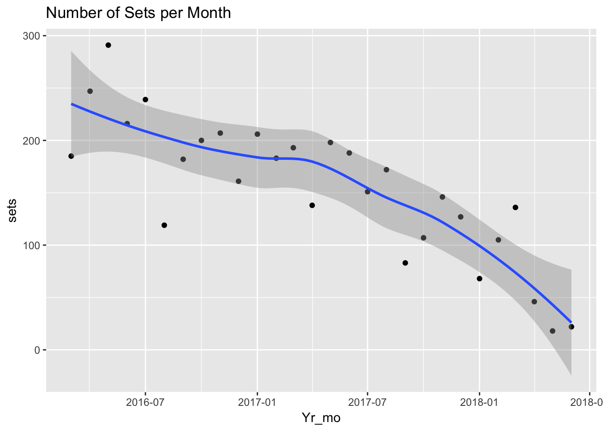
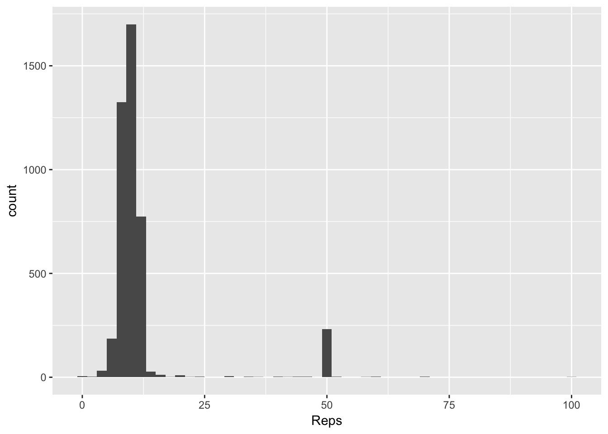
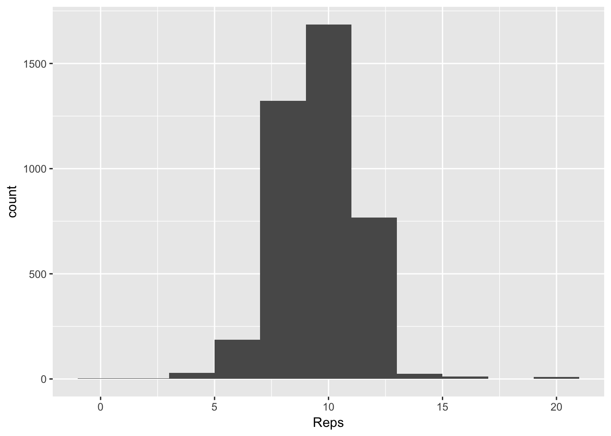
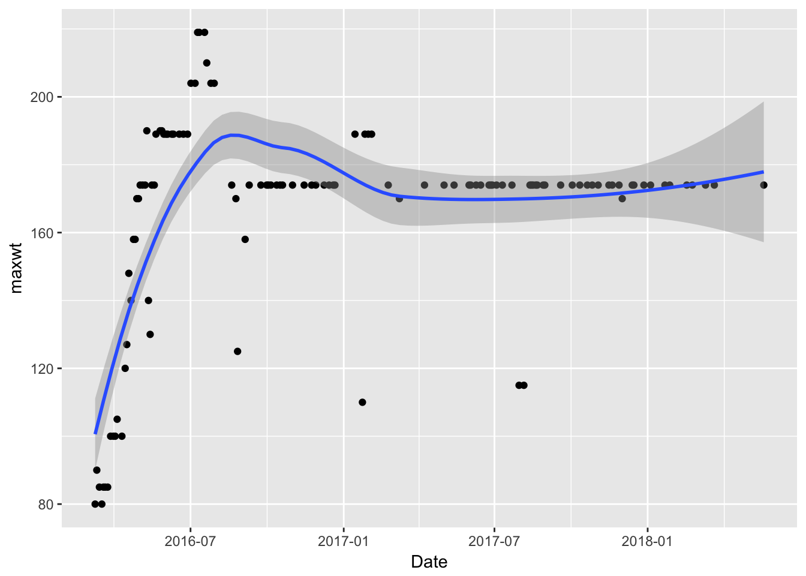
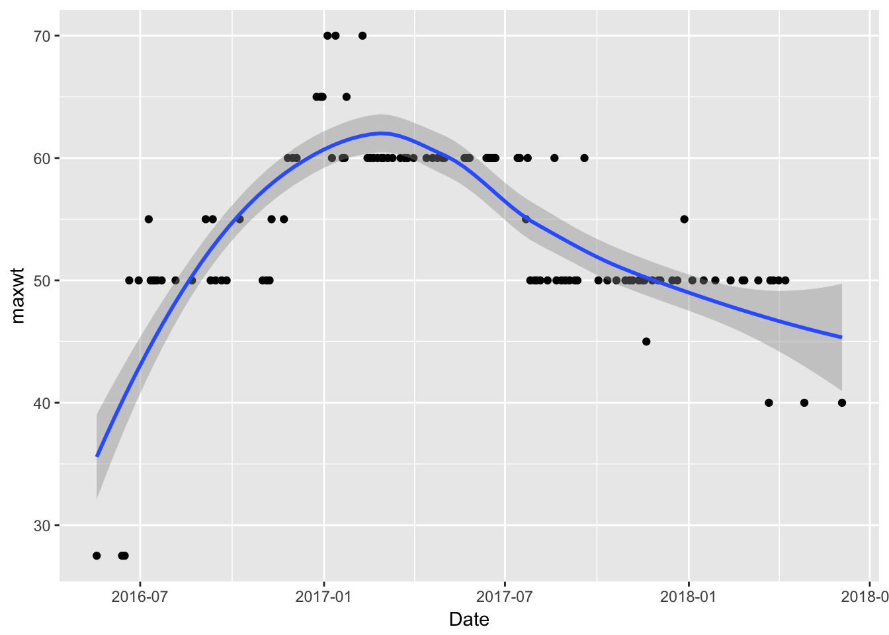

I lifted weights regularly for two years but stopped recently because I decided to run more instead. I tracked my weight lifting using an app called Strong, and since it seemed that I had reached my peak of weight lifting I figured I would look back on my exercise over this time.
library(dplyr)##
## Attaching package: 'dplyr'## The following objects are masked from 'package:stats':
##
## filter, lag## The following objects are masked from 'package:base':
##
## intersect, setdiff, setequal, unionlibrary(ggplot2)
library(lubridate)##
## Attaching package: 'lubridate'## The following object is masked from 'package:base':
##
## datedat <- read.csv("../datasets/strong.csv")
dat <- tbl_df(dat)
dat## # A tibble: 4,334 x 9
## Date Workout.Name Exercise.Name Set.Order lb Reps mi Seconds
## <fct> <fct> <fct> <int> <dbl> <int> <dbl> <int>
## 1 2016-0… Basic 2 Bench Press (… 0 65 10 0 0
## 2 2016-0… Basic 2 Bench Press (… 1 80 10 0 0
## 3 2016-0… Basic 2 Lat Pulldown … 0 80 10 0 0
## 4 2016-0… Basic 2 Lat Pulldown … 1 80 10 0 0
## 5 2016-0… Basic 2 Shoulder Pres… 0 35 10 0 0
## 6 2016-0… Basic 2 Shoulder Pres… 1 35 10 0 0
## 7 2016-0… Basic 2 Bicep Curl (M… 0 25 10 0 0
## 8 2016-0… Basic 2 Bicep Curl (M… 1 30 10 0 0
## 9 2016-0… Basic 2 Tricep Extens… 0 45 10 0 0
## 10 2016-0… Basic 2 Tricep Extens… 1 45 10 0 0
## # ... with 4,324 more rows, and 1 more variable: Notes <fct>From a high level look at the data, I have a table with each row being a set of an exercise. It’s pretty amazing to think that I did 4334 sets of various exercises over these two years.
Data Cleaning
Looking at the data there were some basic cleaning issues. One was that the Date format was read in as a factor and I needed to change it into a format that can be manipulated. The other was that there were some variables that weren’t needed like the workout name (corresponding to a preset workout), mi (miles?), and Seconds. I didn’t use these often or consistently so there’s not much to be gained there.
dat$Date <- ymd_hms(dat$Date)
dat <- dat %>% select(Date, Exercise.Name, Set.Order, lb, Reps) Now I was ready to answer some basic questions.
How many days did I lift and how long does the data cover
max(dat$Date) - min(dat$Date)## Time difference of 816.8135 dayslength(unique(dat$Date))## [1] 218I completed 218 workouts over the span of 816 days. Recently I have been lifting very rarely.
dat %>%
mutate(Month_obs = month(Date), Year_obs = year(Date)) %>%
group_by(Year_obs, Month_obs) %>%
summarize(sets = n()) %>%
mutate(Yr_mo = as.Date(paste0(Year_obs, "-", Month_obs, "-01"))) %>%
ggplot(aes(x = Yr_mo, y = sets)) + geom_point() +
geom_smooth(method = "loess") +
ggtitle("Number of Sets per Month")
month(dat$Date[1])## [1] 3What exercises did I do
dat %>% group_by(Exercise.Name) %>% summarize(sets = n()) %>%
arrange(desc(sets))## # A tibble: 36 x 2
## Exercise.Name sets
## <fct> <int>
## 1 Lat Pulldown (Custom) 502
## 2 Triceps (cable) 428
## 3 Bench Press (Machine) 341
## 4 Bicep Curl (Dumbbell) 321
## 5 Shoulder Press (Machine) 297
## 6 Seated Military Press (Dumbbell) 286
## 7 Low Row cable 267
## 8 Crunch 266
## 9 Seated Row (Custom) 240
## 10 Bicep Curl (Machine) 228
## # ... with 26 more rowsThat seemed about right. I did about 3 sets usually, and I did some exercises just about every time (Lat Pulldown for example).
What kind of reps was I doing per set
I examined the number of reps I did per set.
summary(dat$Reps)## Min. 1st Qu. Median Mean 3rd Qu. Max.
## 0 8 10 12 12 100ggplot(dat, aes(x = Reps)) + geom_histogram(binwidth = 2) There is a second peak at 50 from crunches, but I was surprised that I did one set of 100. What was that all about? Looks like I haven’t been doing much crunches lately.
dat %>% filter(Reps > 50) %>% arrange(desc(Reps))## # A tibble: 12 x 5
## Date Exercise.Name Set.Order lb Reps
## <dttm> <fct> <int> <dbl> <int>
## 1 2016-05-24 01:28:30 Crunch 1 0 100
## 2 2016-05-24 01:28:30 Crunch 0 0 70
## 3 2016-05-24 01:28:30 Crunch 2 0 70
## 4 2017-01-21 12:31:30 Crunch 0 0 70
## 5 2017-06-24 11:50:17 Crunch 0 0 70
## 6 2016-05-07 11:57:18 Crunch 1 0 60
## 7 2017-01-08 20:55:35 Crunch 2 0 60
## 8 2017-03-18 13:05:42 Crunch 0 0 60
## 9 2017-03-27 12:13:00 Crunch 1 0 60
## 10 2016-05-07 11:57:18 Crunch 0 0 58
## 11 2017-05-24 11:59:51 Crunch 0 0 53
## 12 2016-04-23 12:21:15 Crunch 0 0 52Taking out the crunches, most of my sets were 8-12. I also needed to take out Planks and Decline Crunches
dat %>% filter(Exercise.Name != "Crunch") %>%
filter(Exercise.Name != "Plank (Custom)") %>%
filter(Exercise.Name != "Decline Crunch") %>%
ggplot(aes(x = Reps)) + geom_histogram(binwidth = 2)
How did the weight change over time
I got stronger then not so strong as the workouts spaced out. How to show this? One way was to look at an exercise over time. Bench press machine was a good one since I did this over a long period of time.
dat %>% filter(Exercise.Name == "Bench Press (Machine)") %>%
group_by(Date) %>% summarize(maxwt = max(lb)) %>%
ggplot(aes(x = Date, y = maxwt)) + geom_point() + geom_smooth()## `geom_smooth()` using method = 'loess'
Maybe that’s not a great example.
dat %>% filter(Exercise.Name == "Bicep Curl (Dumbbell)") %>%
group_by(Date) %>% summarize(maxwt = max(lb)) %>%
ggplot(aes(x = Date, y = maxwt)) + geom_point() + geom_smooth()## `geom_smooth()` using method = 'loess'